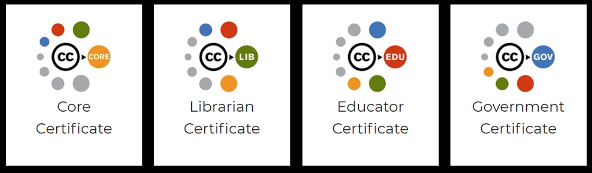

CC Certificates: Saatnya Menjadi Ahli Lisensi CC Bersertifikat!

Sertifikat Creative Commons
Creative Commons (CC) Certificates atau Sertifikat CC merupakan salah satu upaya jangkauan keluar CC Internasional dalam menyebarkan pengetahuan terkait lisensi CC. Proses ini terbuka bagi siapa saja yang berminat mendapatkan sertifikat keahlian ini dengan menempuh suatu proses sertifikasi. Upaya ini menerapkan sistem “pelatihan untuk pelatih” (‘‘Training of Trainers’’) dengan materi-materi pembelajaran berlisensi terbuka, yang memastikan bahwa proses sertifikasi dapat dijalankan di mana saja, dengan format yang berbeda-beda. Materi yang diajarkan diantara lain adalah tentang keorganisasian CC, hak cipta dasar, dan pemahaman terkait CC sebagai alat pelisensian ciptaan. Pihak-pihak yang mendapatkan sertifikat ini nantinya diharapkan dapat menjadi ahli CC yang mampu berperan sebagai pelatih dalam setiap lokakarya atau sosialisasi tentang lisensi CC.
Sertifikat yang tersedia dalam program ini untuk sementara terbagi menjadi 4 jenis yaitu CC Core untuk proses pendalamanan lisensi CC secara khusus, CC Edu adalah sertifikasi ahli lisensi CC untuk pengajar, CC Lib adalah sertifikasi ahli lisensi CC untuk pustakawan, dan yang terakhir adalah CC Gov adalah sertifikasi ahli lisensi CC untuk pegawai negeri atau setiap hal yang berkaitan dengan pemerintahan.
Proses Sertifikasi
Sejak tanggal 8 Januari lalu, program ini berjalan dengan status beta (percobaan) sertifikasi selama 12 minggu, hingga tanggal 1 April 2018. Kategori sertifikat yang diberikan ialah CC Edu track dan CC Lib track. Dalam percobaan ini, materi sertifikasi akan disampaikan secara daring dengan memanfaatkan alat bernama Canvas. Materi sertifikasi terdiri dari modul pembelajaran, kuis, dan tugas berupa aktivitas-aktivitas yang memungkinkan peserta sertifikasi mendemonstrasikan ilmu-ilmu yang mereka dapat dalam proses sertifikasi. Untuk saat ini kuota keikutsertaan dalam proses sertifikasi sudah penuh, namun Anda diharapkan untuk terus memantau perkembangan program ini dengan mendaftarkan diri ke milis CC Internasional atau bergabung di forum Slack mereka.
Pelaksanaan tahap percobaan program ini dipimpin oleh David Wiley, salah seorang tokoh lama di Creative Commons dan gerakan-gerakan keterbukaan lainnya, khususnya Sumber Pembelajaran Terbuka. Peserta program ini terdiri dari 50 orang yang berasal dari 20 negara yang berbeda. Para peserta pun memiliki latar belakang yang berbeda-beda seperti pengajar, pustakawan, Wikipediawan, aktivis hak-hak digital, ahli hukum, dan masih banyak lagi. Hilman Fathoni, Konsultan Lisensi Creative Commons Indonesia (CCID) dan Manajer Proyek Training of Trainers Creative Commons Indonesia, akan menjadi salah satu dari 50 orang pertama yang mendapatkan Sertifikat CC dengan mengikuti program ini hingga selesai.
Pihak penanggung jawab program ini di kemudian hari berniat untuk mengeksplorasi kemungkinan-kemungkinan lain jika program ini dapat juga diterapkan ke profesi-profesi selain dari program-program yang sudah tersedia. Sepanjang tahun 2018, tepatnya setelah Konferensi Tingkat Tinggi Dunia Creative Commons di bulang April, penganggung jawab program akan membuka kembali program sertifikasi dan meminta tiap pesertanya untuk turut serta membangun konten-konten agar hal tersebut dapat terjadi. Selain itu, dengan dibubarkannya sistem afiliasi dan diberlakukannya Jaringan Global Creative Commons, diharapkan program ini dapat menjadi alat penguat dalam keterlibatan setiap pengguna lisensi CC di jaringan ini.
Training of Trainers Creative Commons Indonesia

Creative Commons Indonesia (CCID) yang berdiri sejak tahun 2011 telah mengadakan sosialisasi lisensi Creative Commons dalam bentuk lokakarya tatap muka ke berbagai daerah di Indonesia. Bersamaan dengan hal tersebut, CCID juga menyediakan fasilitas diskusi di dalam jaringan (daring) melalui rubrik “Tanya Jawab Sobat CCID” di situs web creativecommons.or.id.
Meskipun begitu, tidak dapat dipungkiri bahwa lokakarya tatap muka tetap menjadi komponen penting dalam upaya sosialisasi lisensi CC, karena:
- Lokakarya tatap muka merupakan sarana untuk menjawab pertanyaan-pertanyaan dari pengguna lisensi CC, maupun calon pengguna lisensi CC, yang tidak dapat terjawab secara daring;
- Lokakarya tatap muka merupakan wadah untuk berkumpul dan berdiskusi perihal penerapan lisensi CC secara teknis agar dapat memenuhi kebutuhan individu maupun kelompok pengguna lisensi CC;
- Lokakarya tatap muka merupakan upaya pemerataan persebaran pengetahuan tentang lisensi CC secara merata di Indonesia, sekaligus menjadi jalan keluar permasalahan akses internet di Indonesia yang belum merata.
Dalam melaksanakan lokakarya tatap muka yang ideal, CCID dihadapkan dengan beberapa tantangan seperti:
- Jumlah sumber daya manusia yang terbatas untuk menyebarkan ilmu pengetahuan terkait lisensi CC ke seluruh wilayah Indonesia;
- Akses ke seluruh wilayah Indonesia yang merupakan negara kepulauan tidak selalu tersedia dan memakan biaya yang tidak sedikit.
Sebagai solusi atas hal tersebut, CCID mengadakan Program “Training of Trainers Creative Commons Indonesia”. Melalui program ini CCID akan menyaring sumber daya-sumber daya terbaik yang mewakili daerah-daerah di Indonesia, secara daring dan luring.
Penyaringan diperlukan untuk mendapatkan perwakilan terbaik yang nantinya akan menjadi pelatih bersertifikat dalam setiap lokakarya tatap muka di setiap daerah. Suksesnya upaya perekrutan melalui program CCID-ToT diharapkan dapat memberikan dampak pada penyelenggaraan sosialisasi lisensi CC di masa depan, yaitu cakupan wilayah persebaran pengetahuan tentang lisensi CC yang lebih merata di Indonesia.
Dengan begitu, potensi dari konten-konten berlisensi terbuka, khususnya konten berlisensi CC, dapat dimanfaatkan oleh masyarakat di Indonesia lebih luas lagi sebagai bekal untuk menghindarkan diri dari pelanggaran hak cipta dan terhindar dari potensi sengketa yang dapat muncul dari pelanggaran hak cipta. Karena, masyarakat menjadi paham tentang konsep penggunaan kembali karya yang dilindungi hak cipta, dan mengetahui tata cara penggunaan kembali karya tersebut dengan membedakan mana karya yang berlisensi terbuka dan mana yang tidak dengan membaca setiap ketentuan lisensi yang diterapkan pada karya.
Informasi lebih lanjut terkait program ini akan diumumkan pada minggu pertama bulan Februari 2018 melalui laman web tersendiri khusus untuk program CCID-ToT. Anda semua diundang untuk ikut serta dalam program ini, ya termasuk Anda yang sekarang membaca tulisan ini, apapun latar belakang keilmuan Anda. Program pelatihan ini membuka kesempatan sebesar-besarnya pada peserta dari berbagai latar belakang dan disiplin ilmu atau keahlian yang memiliki minat pada bidang hak cipta dan lisensi terbuka, khususnya lisensi CC. Pakar-pakar lisensi CC dituntut untuk memahami penerapan lisensi pada obyek-obyek perlindungan hak cipta yang begitu beragam. Oleh karena itu, pakar terkait lisensi CC tidak hanya melulu berkaitan dengan orang-orang dengan latar belakang ilmu hukum saja.
Peserta yang mengikuti rangkaian program CCID-ToT nantinya akan dihadapkan dengan tahap penyaringan untuk mendapatkan hal-hal berikut:
- 15 paket beasiswa sertifikasi ahli lisensi Creative Commons dengan nilai total 30 juta rupiah dan menjadi salah satu kontak resmi untuk lokakarya lisensi Creative Commons di situs web Creative Commons International.
- Kesempatan berangkat ke Kanada dan mengikuti Creative Commons Global Summit 2019 untuk 3 orang selama 3 hari untuk peserta dengan nilai terbaik dari 15 peserta penerima beasiswa sertifikasi.
Catatan Perihal Pelaksanan Sertifikasi Creative Commons di Indonesia
Program Sertifikat Creative Commons merupakan program berbayar yang dilaksanakan oleh Creative Commons Internasional. Sertifikat resmi yang diterbitkan oleh Creative Commons International nantinya diberikan kepada 15 peserta yang lolos di 2 dari 3 tahap penyaringan dalam bentuk beasiswa sertifikasi. Berjalannya program sertifikasi hingga tanggal 1 April 2018 merupakan bagian dari tahap penyempurnaan segala aspek sertifikasi yang diperkirakan selesai pada akhir tahun 2018 dan siap dilaksanakan secara lokal pada pertengahan tahun 2019 oleh pelatih bersertifikat di negara tempat sertifikasi dilaksanakan.
Segala informasi tentang CCID-ToT dan Sertifikat Creative Commons dapat Anda tanyakan melalui alamat surel ccidtot@wikimedia.or.id.
Artikel terbaru mengenai sertifikat Creative Commons dapat Anda akses di dua tautan ini: